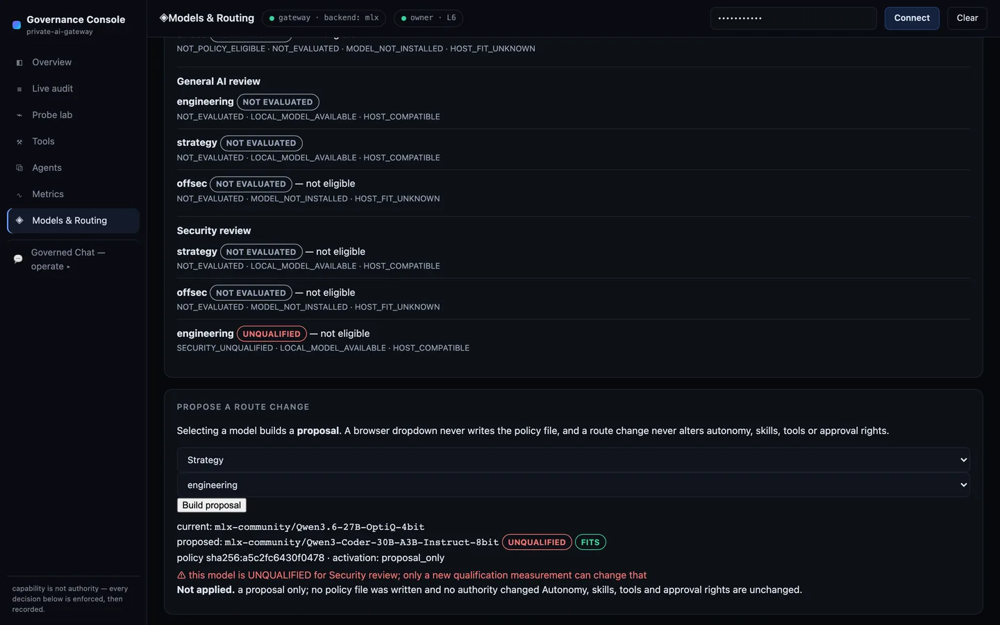

{kind=link}
🧭 Hermes L1 · suggest
A stateful planner. Delegates one planning cycle to the gateway, records the plan to memory — and is denied 403 if it asks to operate above L1. Plans; never executes.
A local-first agent runtime assurance and governance plane that fronts whatever serves your models — an enterprise LLM platform, vLLM/Ollama, or local MLX — and mediates every call with policy-as-code identity, an enforced L0–L6 autonomy ceiling, per-tool and per-skill grants, egress guardrails, and a structured decision audit. Execution needs explicit owner-granted authority, and what was authorized and what then happened is recorded as a signed, durably stored evidence chain an independent verifier re-derives — enforced in code, before any token is generated, not asserted in a README.
# declares L6 (unbounded) — more autonomy than its mandate ❯ curl :8081/v1/chat/completions -H "$HERMES" -H 'X-Autonomy-Level: 6' -d '{"model":"strategy"…}' {"error":{"code":"autonomy_exceeded","message":"Principal 'hermes' is capped at autonomy L1 (suggest); request declared L6 (unbounded)"}} → HTTP 403 # refused before the model ever loads · audited · re-verified
A principal capped at L1 with models ["strategy"] is
refused the instant it asks for more — autonomy it lacks, or a model it was never granted. Then OpenClaw,
an independent verifier that is operationally read-only — it changes no authority and runs
no tool — re-derives that the controls held and signs its own verdict.

Twelve real frames of the actual enforcement code — captured by driving
a live private-ai-gateway in a browser. You operate through the Governed
Chat Console and inspect through the Governance Console; both are the same runtime.
Scroll: the product follows the story.
Prefer to watch? 31-second video ·
GIF — or run it yourself:
pip install . && private-ai-gateway demo (no model, no network, any OS).
The Governed Chat Console is one static file behind a strict default-src 'none'
CSP. It stores no token, holds no authority, and cannot approve anything. Every line that
follows is a real gateway decision on the wire — not a narrated transcript.
The planner makes one governed model call inside its L1 ceiling, then discovers a peer that
advertises code.apply at the lowest sufficient level. It never names the executor
up front and never grants itself anything. The proposal is a request, not a decision.
Handing the planner's own token to the approval box returns
owner_required from the gateway — the single most important boundary in the
product. The run stays frozen and the proposal stays open, so a human can still decide.
The approval binds to this run's canonical plan hash and expires. Editing the goal box afterwards cannot move it: execute recomputes the hash server-side and refuses on drift. OpenCode then applies in a confined sandbox and sub-delegates verification.
approval_decided ← execute_validated ← apply_result,
each signed by its own emitter with its own key, linked by evidence references. OpenClaw
verifies the chain and the linkage before it will return PASS — an unsigned self-attested
report alone cannot produce one. HMAC here is tamper-evident, not non-repudiable.
Running the same frozen plan without an approval returns a governed refusal
(approval_missing) — an HTTP 200 outcome, not an error. Nothing was applied,
and the attempt is in the audit.
One click asks the executor to run above its enforced ceiling and routes a skill the planner
was never granted. Both come back refused with their exact audit codes
(autonomy_amplification, skill_not_delegable).
Chat is where you operate; the console is where you inspect. It authenticates independently — no token is shared, persisted, or passed between the two pages. Deny-by-default means the red in the enforcement ratio is the plane doing its job.
The self-approval denial, the owner's approval, both delegations, the sandbox result and the withheld-authority refusal — recorded with principal, path, reason code and status. This is the same stream a SIEM consumes.
The probe lab sends real requests designed to be refused. Autonomy is a property of the identity in policy, not a field the caller may assert.
Holding a tool is not permission to use it. A principal below a tool's floor is refused even when the tool is explicitly granted — granted is not permitted.
A capable planner, a confined executor, an independent verifier, and a signed durable record of exactly who authorized what. Backed by 1195 tests on two platforms and 23 adversarial evals that fail CI on regression.
pip install . && private-ai-gateway demoEvery request crosses a loopback boundary and runs a fixed gauntlet. Each gate fails closed with a specific status — and authz, autonomy, and rate denials all happen before the model loads, so an unauthorized request never pays for inference.
An adversarial eval suite (OWASP-LLM tagged) re-attacks each control and fails CI on regression; an independent verifier re-derives that they held. Controls aren't claimed — they're proven.
Each component authenticates as its own principal with its own autonomy ceiling — no shared "god" identity. A model may reason about anything; what executes is decided and recorded by the governance plane.

plan → act → verify → record → re-plan
A stateful planner. Delegates one planning cycle to the gateway, records the plan to memory — and is denied 403 if it asks to operate above L1. Plans; never executes.
Capability-denied reviewer (edit/bash/network off, isolation-verified) and an approval-gated apply path: refused without owner approval, confined to a copy, sha256-verified to touch only declared files.
Operationally read-only — it changes no authority, runs no tool, touches no sandbox. It reconciles the audit, metrics, isolation manifests, and policy across nine controls, then signs its own PASS/FAIL verdict into its assurance log under its own key. Append-only to its own evidence; still unable to act.
Drive that loop conversationally. Type a goal: Hermes plans at L1 and proposes a
delegation — it executes nothing. You approve the sandbox apply; OpenCode applies and
sub-delegates verification to OpenClaw; the attenuating chain, the verdict and the signed
evidence lineage come back. Withhold approval and the apply refuses — the model
proposes, only the person authorizes. It's the honest reading of "minimal human intervention":
the human is out of typing every step, never out of holding authority. Run it from the repo
checkout with private-ai-gateway demo, then open /chat. The UI serves
from the package, but orchestration uses the bundled repo agents/ plane; outside
the repo, set PRIVATE_AI_AGENTS_PATH or orchestration returns
503 orchestration_unavailable.
The same runtime from the outside: connected identity and its enforced ceiling, the live decision audit, Prometheus-native counters, policy-rendered agent cards, declared tool floors, and a probe lab that sends real requests designed to be refused. The two pages link to each other but authenticate independently — no bearer token is shared, persisted, or handed between them, and the console is never a privileged bypass. A deeper console-only walkthrough: 38-second video · GIF.
The loop proves authority; the current work hardens the evidence of what was authorized and what then happened — so a verdict no longer rests on artifacts the verified components wrote about themselves. Here is exactly where that stands, without overclaiming.
approval_decided (every owner decision) and execute_validated
(authority granted, before any mutation); OpenCode emits a signed
apply_result instead of leaving only a self-attested report.evidence_id and chain-independent digest, and the three records form a signed graph
(approval_decided ← execute_validated ← apply_result) that OpenClaw re-derives and
validates edge by edge, rejecting dangling, forged, cross-run, or ambiguous links.REQUIRE_AUTHORIZATION_EVIDENCE forced on), OpenClaw refusing a PASS without a
verified signed chain, and the populated database re-verifying across restarts.execute_validated record is written before the single-use approval is
consumed, so a crash in that window can no longer leave spent authority with no durable trace.
Exactly one reservation can exist per approval, and one that outlives a crash is invalidated
fail-closed at startup — nothing is retried, and another attempt needs fresh authority.run_disposition. The honest default asserts
nothing: closed_unknown records that the runtime cannot tell whether the mutation
landed. Exactly one per run under concurrency; late evidence can never supersede it.
The evidence chain is tamper-evident, not non-repudiation — a symmetric-HMAC MVP that detects tampering, reordering, and replay, but not a party holding an emitter's key (asymmetric keys / KMS are future). Autonomy is fixed-ceiling by policy: there is no self-approval and no earned-trust escalation, and execution stays human-gated in a confined sandbox. Runtime-wide crash-safe mutation semantics are still not claimed. An execution interrupted mid-flight is classified, failed closed, independently verified under a signed verdict, and can now be terminally closed by a human as unknown — but the runtime still cannot tell you whether that mutation actually landed. A future sandbox apply can be undone under owner authority; a historical one has no recorded pre-image and stays irreversible, and rollback never leaves the sandbox. This is a local-first, human-in-authority assurance and governance plane — not a fully autonomous, production-deployed, or compliance-certified system, and it has no users, revenue, or design partners. It is a working, tested, honestly-scoped engineering artifact.
Every mitigation cites the executable proof — an eval ID or unit test that runs in CI — so the threat model stays in lockstep with the code. Loopback → auth → authorization → egress: an attacker must cross every ring, each failing closed and each logged.
{kind=link}